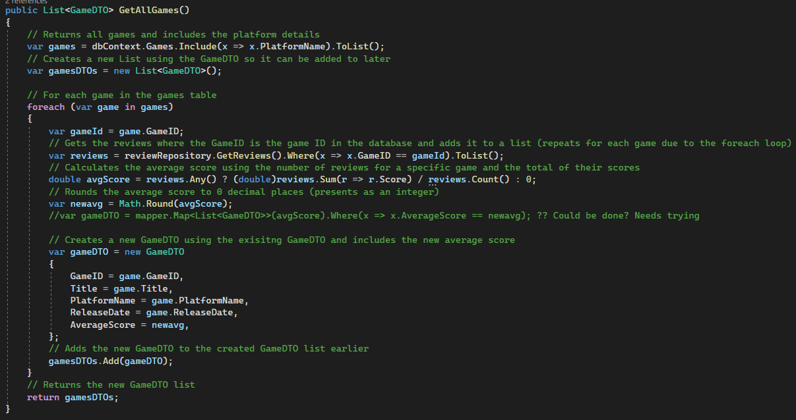

Sprint One Planning meeting & setting up Git Hub
Wednesday 11th October
On Wednesday, 11th October the group had a sprint meeting with the product owner. The meeting involved the planning the execution of the first
sprint. The product owner made some requirements and tasks they would like in the solution. The team spoke to the product owner and identified
the tasks that would take more effort than other tasks and tasks that may not be as essential as others. As the scrum leader, I had taken the
leading parts of the conversation and expanded on tasks by asking how they would like specific tasks to be displayed to the user and how they
would like them executed.
After the meeting, the group identified tasks that would be dependent on others and prioritized the task. Then we assigned a task based on group
member's strengths and weaknesses. The group decided to take one task at a time so group members could pick another one once done and not have to
wait for other group members to finish a task they depended on. My task was to normalize the current database so the platform was no longer static
data but rather a foreign key, this would also involve changing and adding multiple files to the existing solution.
Then, another group member and I made and tested a git hub repository for the solution, as it will ease the process of group members uploading code
at multiple points. Each group member has their own branch that they could make changes to, however, if they wanted to upload changes to the main
solution, then it will need to be approved by another team member to ensure that no changes made will add errors to the main version.
If you would like to see the repository click here.
The trello board (task management system)

The github repository
peer review, UI redesign & Normalisation of platform
Thursday 12th October
Before doing my task, I peer-checked and tested another group member's task before they merged their changes onto the existing solution (their task was to
migrate the current solution to entity framework Core), so it needed to be done first before any other task was completed.
I then made a more visually appealing and accessible UI to users, and started my task of normalization of the platform in the database and the API. I
redesigned the database so the game table would take a foreign key from a platform table for a game platform rather than using static data for each game
platform. I had to remove the existing platform classes in the gameDTO.cs and game.cs and added different classes in them both that would inherit platform
information from classes from the new PlatformDTO.cs and Platform.cs. Both files are needed otherwise, platform information will not be gathered, I then had
add a DBSET to the GameDbContext.cs so the API could use the PlatformDTO and Platform.cs to make queys. When making the changes. I then had to edit the SQL
game repository as a line was needed to include the platform with the game when outputting data, this was done by using the entity frame work function
.include . Finally I needed to make a mapper method to that inherited the both PlatformDTO and the Game.cs that linked them together when they needed to
be used in a method. I found an error that prevented the data from going to the front end, so I left it till the next day.
Game & Platform DTO files
Get all games method in the SQL repository with changes to include the platform
Game.cs and platform.cs files
GameDbContext.cs with DBSET Platform and auto mapper with auto mapper method
Database's game and platform tables
HTML made for the UI
The UI after the redesign
Display the average score against each game & Database
Friday 27th October
When planning to work on displaying the average score against each game I was going to make a method that was could be used in the game controller, however due to how get game by title
works this would not be possible so i opted for changing each current name method to get data on a game.
I had redesign the database with two group members changes as they where working on two different databases and it was getting overwhelming to keep track of changes. I also had to remove
the score colum from the game table as it would not be needed after I complete my task.
Due to the changes made in the database i had to remove any verbile in the Game DTO and Game.cs that resented Score, then i had to use encapsulation oriented programming as
the game SQL repository would need to use the review repository to work out an arrange score, as with out the game controller having assess to review repository it would not be possible. When editing
each method in the SQL repository I had a group member help me when making the code to find the score based on what the method was doing as it was extremely changing. Each method will look through all its games
then gets the reviews where the game id matches the game id in the game table, then calculate the average based on the all the scores taken from the reviews, finally it will round the score for the front end. The only
difference between the get all games method and get games by title method is I had add contains to the line that looks for the game id.
Get all games by title method
Get games by title method

All DTOs that had to be change
The new Game.cs file